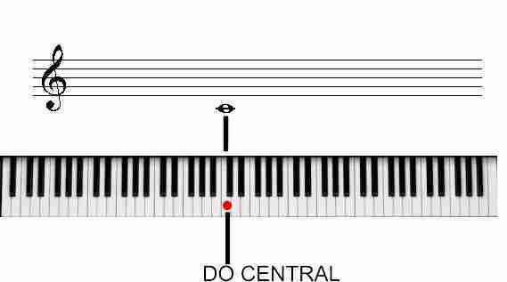
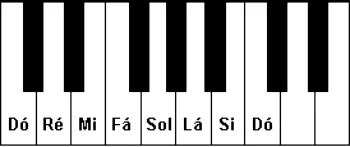
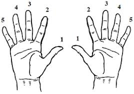

Piano
Onde são as notas no piano ?
No piano tem-se como base a nota dó como o centro do piano, apartir dai para o lado direito é a clave de sol e para o lado esquerdo a clave de fá.

Depois de idenficar o Dó central, basta ter enconta a imagem ao lado:

Posições das mãos no piano
No piano, numeramos os dedos de 1 a 5, sendo o 1 o polegar, o 2 o indicador, o 3 o médio, o 4 o anelar, e o 5 o mindinho. A posição das mãos é muito importante porque é com a posição das mãos que conseguidos, principalmente tocar direito , e fazer escalas.
